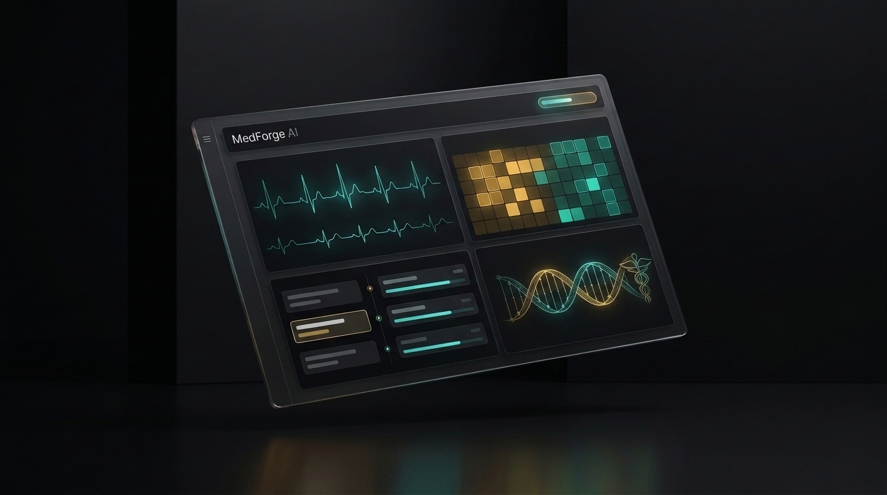

MedForge AI.
A multi-screen React clinical learning prototype uniting generated study timetables, note ingestion flows, OSCE practice, MCQ views, and an AI mentor interface.

Overview
MedForge AI explores how clinical medical education can become more structured and personalized. The repository implements a multi-screen React, TypeScript, and Tailwind interface covering study planning, learning confidence analysis, OSCE drills, and mentor conversation views.
The Problem
Medical students juggle dense lecture notes, ward rotations, MCQs, and practical OSCE stations across disconnected tools that rarely reflect clinical reasoning workflows.
Product Concept
Design a unified clinical learning studio modeled on real MBBS preparation—bringing timetables, note review, confidence heatmaps, and AI mentor guidance under one roof.
Approach & Implementation
Built modular React + TypeScript + Tailwind CSS views with Vite to validate information architecture and multi-screen study journeys using illustrative clinical data.
Key Features
- Study dashboard and generated clinical timetable views
- Handwritten-note and document-upload workflow concepts
- High-yield notes, MCQ review, and OSCE preparation interfaces
- AI mentor conversation view alongside confidence heatmaps and weekly learning insights
Challenges & Decisions
Prototyping the complete multi-screen study UX first with structured illustrative datasets allows rapid iteration with medical students before wiring live clinical LLM backends.
Outcome & Current Status
Public React/TypeScript interface prototype available on GitHub (live AI backend not yet connected).